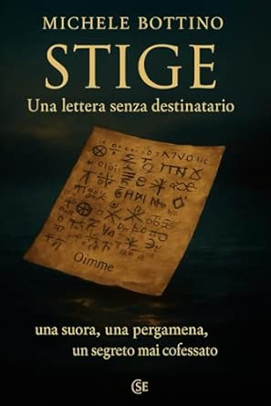

Narrativa investigativa · mistero storico · thriller psicologico
Stige: Una lettera senza destinatario

Presentazione dell’opera
Nella Sicilia del Seicento, il ritrovamento di una misteriosa lettera attribuita a suor Maria Crocifissa della Concezione, nata Isabella Tomasi, diventa il centro di un’indagine che attraversa storia e psicologia. Ambientato attorno al monastero del Santissimo Rosario di Palma di Montechiaro e all’episodio del 1676, il romanzo intreccia ricerca documentaria e narrazione della vita interiore della religiosa. La vicenda indaga la tensione fra fede, sospetto, ragione e superstizione, interrogando il confine tra le testimonianze storiche e la loro interpretazione.
Sinossi riformulata dalla panoramica Amazon trasmessa dall’autore: gli elementi narrativi e i riferimenti documentari sono presentati come contenuto dell’opera, non come attestazioni storiche indipendentemente verificate.
Edizioni e identificativi
Formato segnalato nello Store Amazon: Copertina flessibile
ISBN cartaceo riportato nel catalogo del sito: 9798273513433 · ASIN cartaceo: B0G4PRRY69
Pubblicazione: 12 dicembre 2025 · Editore: Independently published
Lingua: italiano · Lunghezza stampa: 152 pagine
Dimensioni: 15,24 × 0,97 × 22,86 cm · Peso indicato: 213 g
Formati indicati sulla base dell’elenco dello Store Amazon comunicato il 27 ottobre 2026. La disponibilità può variare.